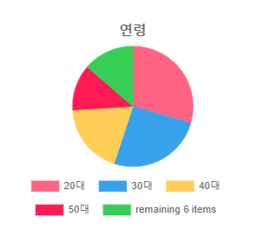

특징
1) 두피 표면이 맑은 청백색을 띄며 투명도가 높다.
2) 각질이 없어 깨끗하며 모공이 완전히 열려 있다.
3) 한 개의 모공에 2~3개의 모발이 건강하게 자리잡고 있으며, 모발의 굵기가 일정하다.
4) 각질이나 이물질이 없고, 맑은 상태를 유지하며 빈 모공도 거의 보이지 않는다.
관리 방법
현재의 상태를 지속적으로 유지한다.
묵은 각질이 쌓이지 않도록 한 달에 1~2회 정도 두피 스케일링을 한다.
샴푸는 아침보다 저녁에 하는 것이 좋다.
샴푸 후 두피에 남아있는 수분을 완전히 말린 뒤 잠자리에 드는 것이 좋다. 또한 손톱에 의한 강한 마사지는 하지 않는다.
린스의 경우 모발의 끝을 위주로 하여 충분히 헹군다.
[{{A}}의 통계그래프]
[{{A}}의 제품추천]
퍼펙트 세럼 오리지널 샴푸
려 강화 약쑥 샴푸
{% elif A == '건성' %}
특징
1) 유,수분이 제거되거나 증발, 건조한 상태, 윤기가 없고 각질이 쌓인다.
2) 각화된 표피가 제때 떨어져 나가지 못해 모공을 막고 있는 경우이며, 모발이 가늘어지며 두피 표면이 거칠다.
3) 군데군데 각질 비듬이 보이며, 모공 주위에 유,수분이 없고 많이 함몰되어 있다.
4) 피지막이 없어 손상 받기 쉽고, 염증이 생기기 쉽다.
5) 2~3일 머리를 감지 않아도 두피에 기름 때가 확인되지 않는다.
관리 방법
건조에 의해 생기는 각질 제거와 모공의 세척
혈액 순환을 촉진 시키는 관리와 영양 공급
보습성이 함유된 제품 사용
유,수분 공급으로 각질 세포 진정
지나친 드라이기 사용 피하기, 자연 건조
가벼운 두피 마사지로 강하지 않은 자극 주기
[{{A}}의 통계그래프]

[{{A}}의 제품추천]
천삼화 두피보습 볼륨 샴푸
미장센 아로마 에센셜 리프레싱 샴푸
{% elif A == '민감성' %}
특징
1) 세균의 감염, 두피의 불결 (곰팡이, 박테리아, 바이러스)
2) 염증 발생, 과도한 피지로 인한 트러블이 나타나는 상태
3) 화학적 자극과 과음이 원인일 확률이 높다.
4) 붉은 밤점이나 뾰루지, 가는 실핏줄, 홍반 및 출혈이 확인된다.
5) 영양 상태 불균형시 과립층 부위 저항력이 약화 된다.
6) 약한 자극이나 압력에 두피 주변이 붉게 변한다.
관리 방법
두피 청결 및 세균 번식 억제 및 전이 예방
염증, 기타 질환 치료 후 관리할 것
심한 마사지는 삼가기
잦은 화학적 시술 피하기
신체적 리듬이나 균형을 잃지 않게 해야 한다
[{{A}}의 통계그래프]
[{{A}}의 제품추천]
려 순한 저자극 더마 샴푸
프레시팝 제로톡스 두피 진정 샴푸
{% elif A == '지루성' %}
특징
1) 비듬과 피지가 과다하게 분비되어 염증이 생기는 유형이다.
2) 예민성 두피와 지성 두피의 혼합형이다.
3) 두피 이외의 피부인 얼굴 등에도 피부 병변을 동반하는 지루 피부염으로 발전될 수 있다.
4) 여자 보다 남자에게서 조금 더 많이 발생되며, 피부가 기름진 사람에게 호발하는 경향이 있다.
관리 방법
모발 및 피부의 청결을 유지하는 것이 중요하다
지루성 두피 전용 제품을 사용해 두피 환경을 개선하는 것이 시급하다
염증 및 기타 질환을 치료 한 후 관리하는 것이 좋다
자극적인 음식, 고지방 식품, 당분, 술 섭취는 피하는 것이 좋다
[{{A}}의 통계그래프]
[{{A}}의 제품추천]
라보에이치 두피강화샴푸
려 자양윤모 9EX 두피 클렌저
{% elif A == '염증성' %}
특징
1) 명확히 확인된 원인이 없이 다양하게 발생한다.
2) 피지의 과다 분비, 환경적 요인, 면역기능의 저하, 스트레스 등등 원인이 매우 다양하다.
3) 홍반과 비듬이 흔하게 나타나며, 40~70세 사이에서 나타나기 쉽다.
4) 성인 남성에게서 더 흔하게 나타난다.
관리 방법
샴푸 사용시 두피전용샴푸로 5분정도 마사지를 하는 것이 좋다
비타민 B와 C를 충분히 섭취한다
충분한 휴식과 수면이 필요하다
금연 및 절주가 필요하다
증상이 악화되는 경우에는 반드시 피부과 전문의에게 염증치료를 받아야 한다
[{{A}}의 통계그래프]
[{{A}}의 제품추천]
초록마을 블랙 벨벳 샴푸
아윤채 리밸런싱 트리트먼트
{% elif A == '비듬성' %}
특징
1) 두피에 가늘고 마른 겨 같은 인설이 생기며 가려움을 유발한다.
2) 피지선의 과다 분비, 호르몬 불균형, 두피 세포의 과다 증식 등의 원인에 의해 일어난다.
3) 요인이 다양하며 특히 호르몬 불균형, 두피 불청결, 스트레스 등으로 비듬균의 증식으로 인해 발생한다.
4) 심한 경우 두꺼운 인설, 홍반, 진물이 나기도 한다.
관리 방법
염증 및 기타 질환은 치료 후에 관리하는 것이 좋다
민감성 두피 전용 제품을 사용에 영양을 공급 하는 것이 좋다
스타일링제의 사용을 피하는 것이 좋다
건성 비듬일 경우에는 비타민 A가 포함된 오일이나 로션을 두피에 발라 주는 것이 좋다
지성 비듬일 경우에는 비타민 B를 복용하고, 샴푸 후 잔여물이 남지 않게 깨끗하게 행궈주는 것이 중요하다
[{{A}}의 통계그래프]
[{{A}}의 제품추천]
프레시팝 만다린&유자 샴푸
미장센 살롱 플러스 클리닉10 샴푸
{% elif A == '지성' %}
특징
1) 과다한 피지로 인해 모공에 물이 고여 있는 것처럼 보인다.
2) 두꺼운 각질층과 두피에 투명감이 없어 둔탁한 상태이다.
3) 비듬과 가려움증을 동반할 가능성이 높다.
4) 피지 과다분비로 모낭 안으로 피지가 역류하여 지루성 탈모가 발생할 확률이 높다.
5) 심한 악취를 동반하며 모발의 탄력도 저하를 유발할 수 있다.
관리 방법
철저한 청결 관리가 필수다.
두피 세정과 피지 조절에 초점을 두고 관리해야 한다
유분이 많거나 강한 화학성 제품은 피하는 것이 좋다
자극적인 음식을 먹지 않는 것이 좋다
[{{A}}의 통계그래프]
[{{A}}의 제품추천]
청아 딥 클렌징&쿨링 샴푸
아윤채 리플레싱 샴푸
{% elif A == '탈모성' %}
특징
1) 호르몬, 유전에 의해 발생하는 경우가 많다.
2) 탈모 = 모발 공장에서 제조가 중지된 것과 같다.
3) 모세포의 힘이 약해 모발의 성장기가 짧다.
4) 모발이 굵었더라도, 쉽게 가늘어짐과 동시에 모주기가 짧아진다.
관리 방법
두피 스케일링 - 두피 표면이 맑고 청백색을 띄며 각질 없이 모공이 열려 있어 영양분을 쉽게 흡수 할 수 있는 두피 환경을 만든다
두피 마사지 - 두피 혈액 순환, 혈류량 증가, 신진대사 활성화
샴푸 - 두피 세정
영양 - 두피 영양 공급, 세포 재생, 탈모 원인 물질 차단
[{{A}}의 통계그래프]
[{{A}}의 제품추천]
려 약령원 프리미엄 탈모케어샴푸
려 헤리티지 진저비타 샴푸
{% else %}
특징
위에 해당하는 유형별 해당 증상이 복합적으로 나타날 경우, 병원에서 상담을 받는 것이 좋다.
두피 건강에 영향을 끼치는 요인은 매우 다양하기 때문에 관리로 극복할 수도 있지만 어느정도 증상이 발현된 뒤에는
치료가 늦을수록 호전이 어려워지는 경우가 많기 때문에 1주일 이상 증상을 겪었다면 늦기 전에 조기에 진료를 받아
건강한 두피와 모발을 꾸준히 유지하는 것이 가장 좋다.